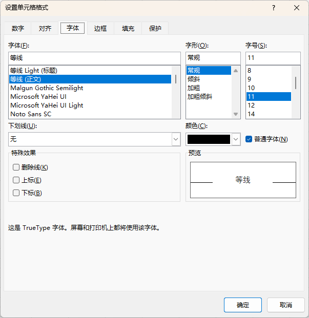
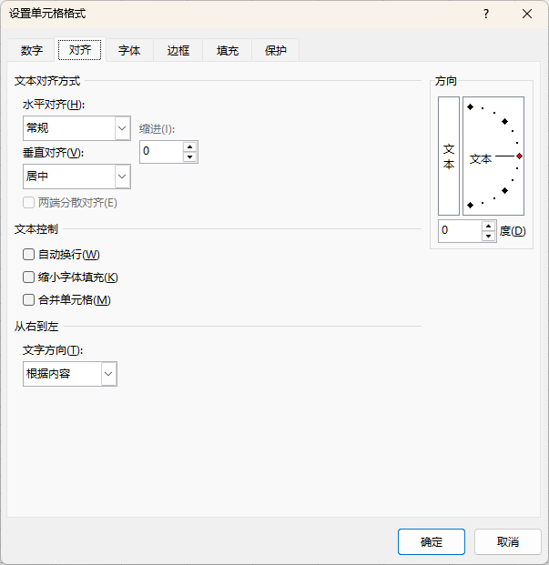
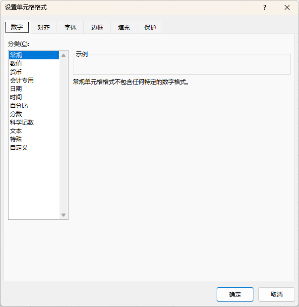
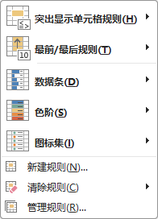
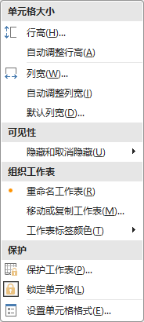
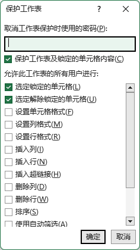

开始
Home
- 内容 Contents
- 字体 Font
- 对齐方式 Alignment
- 数字 Number
- 样式 Styles
- 单元格 Cells
- 编辑 Editing
教学实施
字体、数字、对齐、边框和填充共享一个对话框
快捷键 Ctrl + 1
G/通用格式；输入什么，显示什么

字体 → 更多设置
- 剪切板
- 基本操作同 Word
剪切板
- 字体 Font
- 基本操作同 Word
- 注意：Excel 中没有段落，边框在这里设置
字体
- 对齐方式 Alignment
- 基本操作同 Word
- 水平居中
不使用公式，仅仅布局 → 合并后居中
使用公式 → 跨列居中
对齐方式

对齐方式
- 数字 Number
数字

数字 → 单元格格式
- 数字 Number
默认右对齐
- 文本 Text
默认左对齐
- 日期 Date
特殊的数字
整数
从 1900年1月1日 开始的天数
- 时间 Time
特殊的数字
小数
当前时间占一天的比例
- 货币符号 Currency
- 百分比 Percentage
- 样式 Styles
- 根据数据特点，渲染指定样式
- 功能非常强大
样式

条件格式
- 单元格 Cells
- 插入
- 删除
- 格式：设置单元格格式，如大小、可见性和保护
- 点击下方更多 ▾，获取更多操作
单元格

单元格格式
- 编辑 Editing
- 多单元格数据的操作
- 更多操作，请访问"数据"一节
编辑
练习 Drill
突出显示成绩不及格的数据
- 选择总分列或评价分列的所有成绩数据
- 条件格式 → 突出显示单元格规则 → 小于，输入 60 并确定
突出显示前3名同学的成绩
- 选择总分列或评价分列的所有成绩数据
- 条件格式 → 最前/最后规则 → 前 10 项，修改 10 为 3 并确定
数据条
- 使用多个数据
- 数据：0.5 = 50%
- 条件格式：数据条 → 实心填充
- 数据范围：当前选择数据的最小值和最大值决定
- 通常在数据条 → 其它规则中，显式的指定最小值0和最大值1；还可以仅仅显示数据条而不显示数据
- 每次调整效果都需要重新设置
数据保护
- 只开放编辑区域，其它区域锁定
- 默认情况下，所有单元格是锁定；但是需要启动"保护工作表"才生效
- 可以设置允许的操作

保护工作表
- 选择允许编辑的区域
- 按 Ctrl + 1，打开"设置单元格格式"对话框，切换到"保护"选项卡，取消"锁定"并确认
- "审阅" → "保护" → "保护工作表"，设置密码并确认密码，最后确定